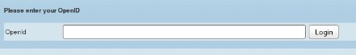

National Faculty Expertise System
Open ID
OpenID allows you to use an existing account to sign in to multiple websites, without needing to create new passwords.
With OpenID, your password is only given to your identity provider, and that provider then confirms your identity to the websites you visit. Other than your provider, no website ever sees your password, so you don’t need to worry about an unscrupulous or insecure website compromising your identity.
OpenID is rapidly gaining adoption on the web, with over one billion OpenID enabled user accounts and over 50,000 websites accepting OpenID for logins.
(Source: http://openid.net)
In NFES, you have the facility to save your openid username and thereafter use it each time you wish to log into NFES. NFES accepts open id accounts issued by major providers such as Yahoo, Google, Facebook etc. An example for an openid user name is "http://amrita-erp-projects.myopenid.com/"
The administrator user who registers the university can save the openid user name at the time of university registration
The faculty users' openid usernames can be captured by the administrator during each faculty registration.
Figure 1: All users - Log In
Click on "Login with OpenID?" to open page as shown below:

Type in your open id username and click Login button.
(Please note that your openid username should be saved in NFES before you can login successfully with it)